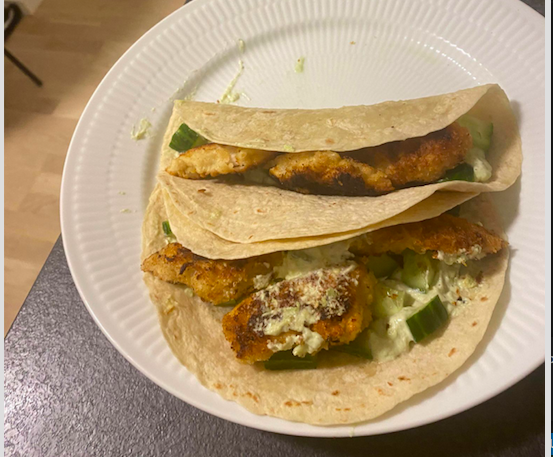

SU-venlige opskrifter
Hjemmelavet pizza
Ingredientser:
25 g gær
2,50 dl vand
3 spsk. Olivenolie
1 tsk. Salt
500 g Amo hvedemel
Topping efter eget valg, men det kunne være kartoffel,
mascarpone, champion og mozzarella som på billedet.
Fremgangsmåde:
Opløs gæren i en skål med lunkent vand. Brug 5 g gær,
til koldhævning natten over, og 25 g gær,
hvis pizzadejen blot kan nå at hæve i 1 time.
Kom 1/3 mel, olivenolie og salt i og rør godt rundt til en ensartet konsistens.
Tilsæt resten af melet lidt ad gangen under omrøring.
Drys lidt mel på køkkenbordet og ælt til sidst dejen sammen til en smidig dej med hænderne.
Bedømmesle af SU-venlighed
Totillias

Ingredientser:
250g Amo hvedemel
4 tsk. salt
4 spsk. neutral olie
1,5 dl vand
evt. olie til stegning. Brug gerne en smedejernspande,
der i forvejen er mættet i fedt og ikke behøver olie undervejs i bagningen
Fremgangsmåde:
Bland alle ingredienser og ælt dejen i ca. 5 min. men gem lidt af melet til du skal rulle tortillaerne ud.
Del dejen i 8 lige store dele og form dem til kugler. Rul dejkuglerne meget tyndt ud (papirtyndt).
Steg tortillaen ved høj varme på en stegepande. Vend tortillaen straks der viser sig små bobler. Vend den ofte indtil den ønskede farve er opnået. Tryk med en stegepalet for at skabe større bobler. Stabl brødene ovenpå hinanden under et viskestykke.
Bedømmesle af SU-venlighed
Nem pastaret
Ingredientser:
200 gram Amo hvedemel
200 gram Amo tipo 00 mel
4 hele æg
Tilføj topping efter ønske. Her er der tilføjet mozerella, løg samt broccoli
Fremgangsmåde:
Hæld melet ud i en bunke på et rent bord. Lav en fordybning i midten.
Slå æggene ud i en skål, og kom æg og salt i mel fordybningen. Pisk med en gaffel æg og salt sammen.
Pisk melet i lidt ad gangen, indtil ca. halvdelen af melet er opbrugt.
Herefter ælt dejen med hånden til den er glat og elastisk. Tilsæt evt. lidt vand, hvis dejen føles for tør.
Del dejen i 3 stykker og form til boller. Lad bollerne stå lunt tildækket i ca. 30 min.
Herefter er dejen klar til brug.
Rul dejen ud ved hjælp af en pastamaskine eller en kagerulle.
Pastaen koges al dente i 2-4 minutter i vand tilsat salt, rør løbende med en gaffel.
Afdryp pastaen i en sigte og server straks.
Bedømmesle af SU-venlighed